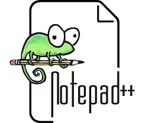
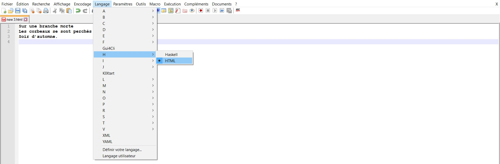
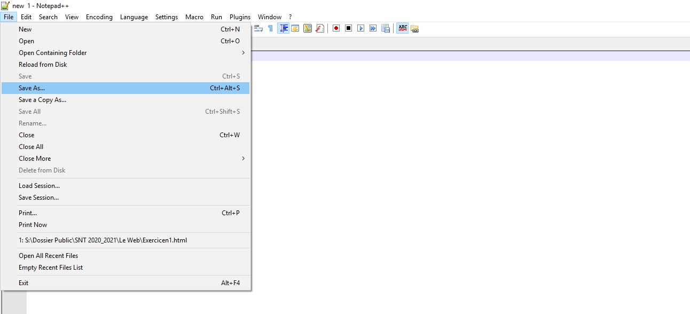
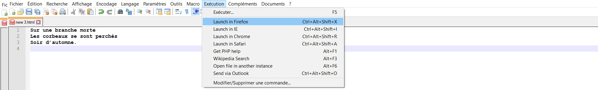

Exercice n°1
Écrivons notre première page HTML :
En allant dans le dossier SI-SNT (sur le bureau de votre PC), ouvrez le logiciel Notepad++ :

Éditez le texte suivant :
Sur une branche morte
Les corbeaux se sont perchés
Soir d’automne.
Sélectionnez le langage HTML comme ci-dessous :

Sauvegardez votre travail sur votre session (Save As...) :

Puis lancez l’exécution (RUN) avec le navigateur Firefox de votre programme en HTML :

Le poème apparaît bien dans le navigateur, mais on constate que les retours à la lignes n’ont pas été pris en compte.
Le navigateur n’a appliqué aucune mise en page.
Pour différencier le texte du contenu du texte qui décrit la mise en page, le langageHTML (HyperTexte Markup Laguage) utilise des balises.
Ces balises consistent en des mots clés encadrés par des chevrons (< et >), et souvent associés par paires.
Voici quelques exemples de balises :
•<p>marque le début d’un paragraphe</p>marque la fin du paragraphe.
•<a>marque le début d’un lien hypertexte</a>marque la fin du lien.
•<h1>marque le début d’un titre de niveau 1 (gros titre)</h1>en marque la fin.
•<h2>marque le début d’un titre de niveau 2 (gros titre)</h2>en marque la fin.
•<img>permet d’insérer une image.
Le fichier HTML est aussi découpé en deux parties, une en-tête (encadré par les balises<head>et</head>) qui contient des informations sur le document et un corps (encadré par les balises<body>et</body>) qui contient ce que doit afficher le navigateur.
Créé avec HelpNDoc Personal Edition: Générateur de documentation complet